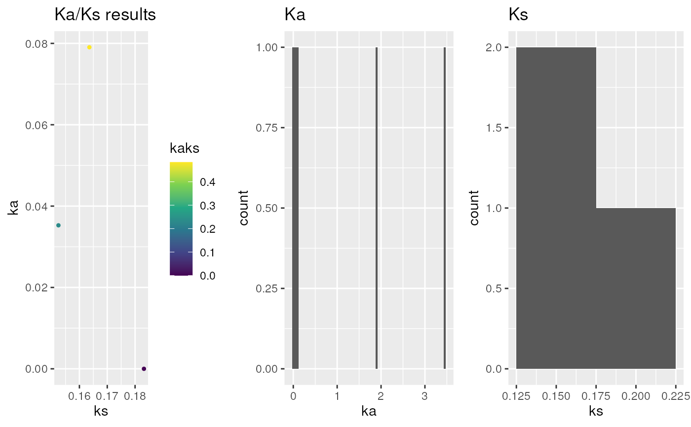

This function calculates Ka/Ks (dN/dS; accoring to
Li (1993) or Yang and Nielson (2000) for each
(conditional-)reciprocal best hit (CRBHit) pair. The names of the rbh
columns must match the names of the corresponding cds1 and cds2
DNAStringSet vectors.
Usage
rbh2kaks(
rbhpairs,
cds1,
cds2,
model = "Li",
plotHistPlot = FALSE,
plotDotPlot = FALSE,
dag = NULL,
gene.position.cds1 = NULL,
gene.position.cds2 = NULL,
tandem.dups.cds1 = NULL,
tandem.dups.cds2 = NULL,
colorBy = "none",
threads = 1,
...
)Arguments
- rbhpairs
(conditional-)reciprocal best hit (CRBHit) pair result (see
cds2rbh) [mandatory]- cds1
cds1 sequences as
DNAStringSetorurlfor first crbh pairs column [mandatory]- cds2
cds2 sequences as
DNAStringSetorurlfor second crbh pairs column [mandatory]- model
specify codon model either "Li" or "NG86" or one of KaKs_Calculator2 model "NG", "LWL", "LPB", "MLWL", "MLPB", "GY", "YN", "MYN", "MS", "MA", "GNG", "GLWL", "GLPB", "GMLWL", "GMLPB", "GYN", "GMYN" [default: Li]
- plotHistPlot
specify if histogram should be plotted [default: TRUE]
- plotDotPlot
specify if dotplot should be plotted (mandatory to define
gene.position.cds1andgene.position.cds1) [default: FALSE]- dag
specify DAGchainer results as obtained via `rbh2dagchainer()` [default: NULL]
- gene.position.cds1
specify gene position for cds1 sequences (see
cds2genepos) [default: NULL]- gene.position.cds2
specify gene position for cds2 sequences (see
cds2genepos) [default: NULL]- tandem.dups.cds1
specify tandem duplicates for cds1 sequences (see
tandemdups) [default: NULL]- tandem.dups.cds2
specify tandem duplicates for cds2 sequences (see
tandemdups) [default: NULL]- colorBy
specify if Ka/Ks gene pairs should be colored by "rbh_class", dagchainer", "tandemdups" or "none" [default: none]
- threads
number of parallel threads [default: 1]
- ...
other codon alignment parameters (see
cds2codonaln) and other plot_kaks parameters (seeplot_kaks)
References
Li WH. (1993) Unbiased estimation of the rates of synonymous and nonsynonymous substitution. J. Mol. Evol., 36, 96-99.
Wang D, Zhang Y et al. (2010) KaKs_Calculator 2.0: a toolkit incorporating gamma-series methods and sliding window strategies. Genomics Proteomics Bioinformatics. 8(1), 77-80.
Yang Z and Nielson R. (2000) Estimating synonymous and nonsynonymous substitution rates under realistic evolutionary models. Mol. Biol. Evol., 17(1), 32-43.
Examples
## load example sequence data
data("ath", package="CRBHits")
data("aly", package="CRBHits")
## load example CRBHit pairs
data("ath_aly_crbh", package="CRBHits")
## only analyse subset of CRBHit pairs
ath_aly_crbh$crbh.pairs <- head(ath_aly_crbh$crbh.pairs)
ath_aly_crbh.kaks <- rbh2kaks(
rbhpairs=ath_aly_crbh,
cds1=ath,
cds2=aly,
model="Li")
head(ath_aly_crbh.kaks)
#> aa1 aa2 rbh_class Comp1 Comp2 seq1
#> 1 AT1G01040.1 Al_scaffold_0001_3256 rbh 1 7 AT1G01040.1
#> 2 AT1G01050.1 Al_scaffold_0001_128 rbh 2 8 AT1G01050.1
#> 3 AT1G01080.3 Al_scaffold_0001_125 rbh 3 9 AT1G01080.3
#> 4 AT1G01180.1 Al_scaffold_0001_114 rbh 4 10 AT1G01180.1
#> 5 AT1G01190.2 Al_scaffold_0001_4419 rbh 5 11 AT1G01190.2
#> 6 AT1G01260.3 Al_scaffold_0001_1326 rbh 6 12 AT1G01260.3
#> seq2 ka ks
#> 1 Al_scaffold_0001_3256 0.746512010137623 9.999999
#> 2 Al_scaffold_0001_128 0 0.183183948635914
#> 3 Al_scaffold_0001_125 0.0568085101205347 0.139074613477284
#> 4 Al_scaffold_0001_114 0.036568079074242 0.154397764535118
#> 5 Al_scaffold_0001_4419 0.750360878236477 9.999999
#> 6 Al_scaffold_0001_1326 0.782288327490296 9.999999
#> vka vks Ka Ks
#> 1 0.00321723120140929 9.999999 0.746512010137623 9.999999
#> 2 0 0.00302230749742857 0 0.183183948635914
#> 3 0.000161257065856298 0.00153175567274471 0.0568085101205347 0.139074613477284
#> 4 0.000101497329819528 0.00124982555578271 0.036568079074242 0.154397764535118
#> 5 0.00939485329398417 9.999999 0.750360878236477 9.999999
#> 6 0.00518073697269674 9.999999 0.782288327490296 9.999999
#> Ka/Ks
#> 1 0.07465121
#> 2 0.00000000
#> 3 0.40847505
#> 4 0.23684332
#> 5 0.07503610
#> 6 0.07822884
## plot kaks
g.kaks <- plot_kaks(ath_aly_crbh.kaks)
